12 posts · 29 visuals · every file to upload is in instagram-v3/UPLOAD/, one folder per post, already named in order.
| Post | Content | Folder | Images | Pin |
|---|---|---|---|---|
| 01 | Meet KAÏRA | POST-01_Meet-KAIRA_PIN | 3 | Yes · 2 |
| 02 | Our Services | POST-02_Our-Services_PIN | 3 | Yes · 3 |
| 03 | The Project — Villa master bedroom | POST-03_The-Project_PIN | 2 | Yes · 1 |
| 04 | Villa — First-floor lounge | POST-04_Lounge | 2 | — |
| 05 | Our process | POST-05_Process | 2 | — |
| 06 | Open-plan living | POST-06_Open-plan | 2 | — |
| 07 | Villa — Dining room | POST-07_Dining-room | 2 | — |
| 08 | Villa — Living room | POST-08_Living-room | 2 | — |
| 09 | Design notes — 5 keys to a calm interior | POST-09_Design-notes | 6 | — |
| 10 | Entrance | POST-10_Entrance | 2 | — |
| 11 | Quote | POST-11_Quote | 1 | — |
| 12 | Kitchen | POST-12_Kitchen | 2 | — |
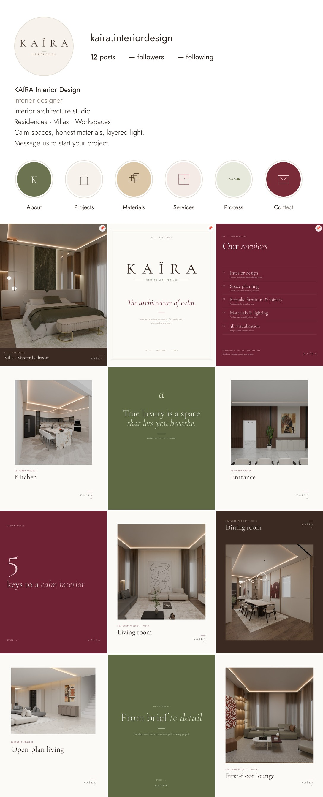
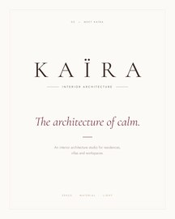
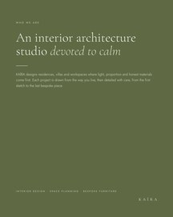
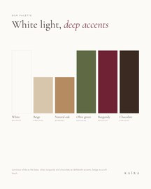
Meet KAÏRA — the architecture of calm.
KAÏRA is an interior architecture studio for residences, villas and workspaces. We design calm spaces where light, proportion and honest materials come first, and where every line has a reason to exist.
Welcome to our studio.
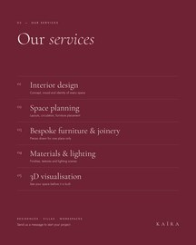
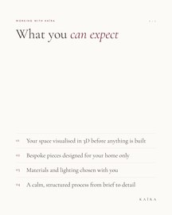
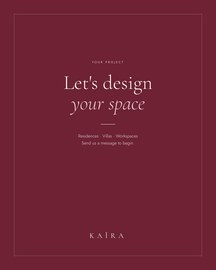
Our services.
01 · Interior design: concept, mood and identity of every space.
02 · Space planning: layouts, circulation and furniture placement.
03 · Bespoke furniture & joinery: pieces drawn for one place only.
04 · Materials & lighting: finishes, textures and lighting scenes.
05 · 3D visualisation: see your space before it is built.
For residences, villas and workspaces. Send us a direct message to start your project.
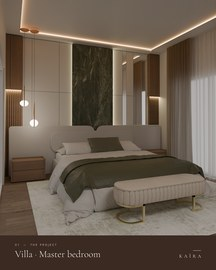
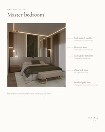
The Project — Villa master bedroom.
A suite built around a single gesture: a band of dark veined marble, backlit, rising behind a wraparound headboard with soft, rounded lines. Lit wood slats, glass globe pendants on fine gold rods and olive bed linen complete a quiet, enveloping atmosphere.
Designed by KAÏRA Interior Design.
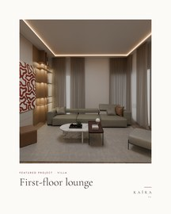
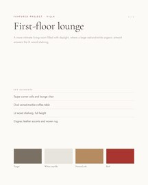
Featured project · Villa — First-floor lounge.
A more intimate living room, filled with daylight from tall windows. A large red-and-white organic artwork answers the lit wood shelving, while a taupe corner sofa, an oval veined-marble coffee table and cognac leather accents bring warmth.
Swipe for the project sheet and its palette.
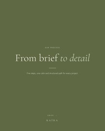
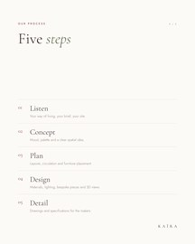
Our process: from brief to detail.
01 · Listen: your way of living, your brief, your site.
02 · Concept: mood, palette and a clear spatial idea.
03 · Plan: layouts, circulation and furniture placement.
04 · Design: materials, lighting, bespoke pieces and 3D views.
05 · Detail: drawings and specifications for the makers.
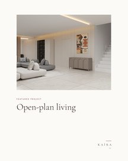
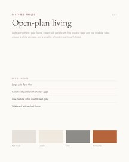
Featured project — Open-plan living.
Light everywhere: pale floors, cream wall panels with fine shadow gaps and low modular sofas in white and grey, around a white staircase and a graphic artwork in warm earth tones.
Swipe for the project sheet and its palette.
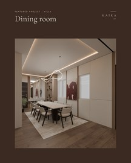
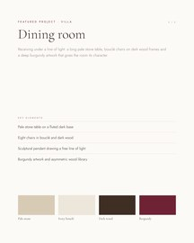
Featured project · Villa — Dining room.
Receiving under a line of light. A long pale stone table on a fluted dark base, eight chairs in bouclé and dark wood, and a sculptural pendant that draws a free line of light above. A deep burgundy artwork gives the room its character.
Swipe for the project sheet and its palette.
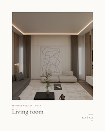
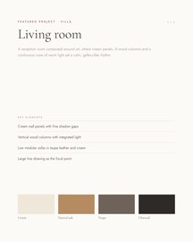
Featured project · Villa — Living room.
A reception room composed around art. Cream wall panels with fine shadow gaps frame a large line drawing, while vertical wood columns with integrated light give the room its rhythm and height. Two low modular sofas, in taupe leather and soft cream, face each other on a pale rug.
Swipe for the project sheet and its palette.
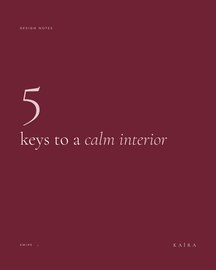
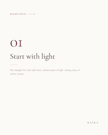
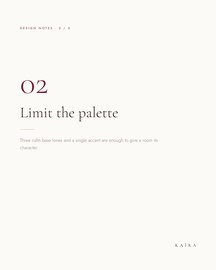
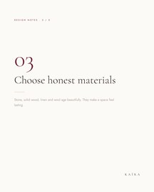
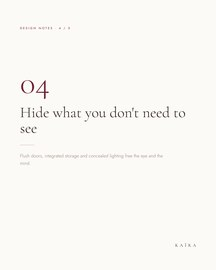
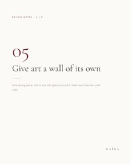
5 keys to a calm interior. Save this post for your next project.
01 · Start with light: plan daylight first, then add warm, indirect layers.
02 · Limit the palette: three calm base tones and a single accent.
03 · Choose honest materials: stone, solid wood, linen and wool age beautifully.
04 · Hide what you don't need to see: flush doors, integrated storage, concealed lighting.
05 · Give art a wall of its own: one strong piece, well lit, with space around it.
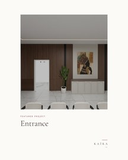
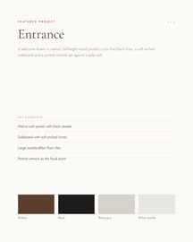
Featured project — Entrance.
A welcome drawn in walnut. Full-height wood panels cut by fine black lines, a sideboard with soft arched fronts and a portrait artwork set against a pale wall, over large marble-effect floor tiles.
Swipe for the project sheet and its palette.
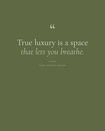
"True luxury is a space that lets you breathe."
Space around things, light that changes with the hours, materials you want to touch. That is the luxury we design for.
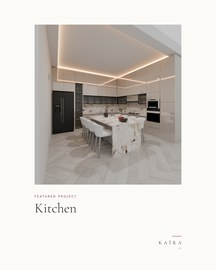
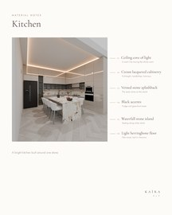
Featured project — Kitchen.
A bright kitchen built around one stone. A waterfall island in veined stone, matched by the splashback, stands against full-height cream lacquered cabinetry without handles. Black accents, the fridge and a glass-front tower, give the room its depth, while a light herringbone floor and a ceiling cove of warm light keep it luminous.
Swipe for the material notes.